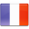

<mat-toolbar color="primary">
    <h2>Computer-database</h2>
    <span class="spacer"></span>
    <button mat-stroked-button *ngIf="!hidden" (click)="computers()" [color]="currentActiveTab[0]" (click)="changeTab(0)">
        {{'HEADER.COMPUTERS' | translate }}
    </button>
    <button mat-stroked-button *ngIf="!hidden" (click)="companies()" [color]="currentActiveTab[1]" (click)="changeTab(1)">
        {{'HEADER.COMPANIES' | translate }}
    </button>
    <button mat-stroked-button *ngIf="isAdmin()" (click)="users()" [color]="currentActiveTab[2]" (click)="changeTab(2)" >
        {{'HEADER.USERS' | translate }}
    </button>

    <span class="spacer"></span>

    <div class="languageEn">
        
    </div>
    |
    <div class="languageFr">
        
    </div>

    <button *ngIf="!hidden" mat-icon-button [matMenuTriggerFor]="menu">
        <mat-icon>person</mat-icon>
        {{getUsername()}}
    </button>

    <mat-menu #menu="matMenu">
        <div class="menu-panel">
            <button mat-menu-item (click)=profile()>
                <mat-icon class="white-icon">settings</mat-icon>
                <span> {{'HEADER.PROFILE' | translate }}</span>
            </button>
            <button mat-menu-item (click)="logout()">
                <mat-icon class="white-icon">exit_to_app</mat-icon>
                <span>{{'HEADER.LOGOUT' | translate }}</span>
            </button>
        </div>
    </mat-menu>
</mat-toolbar>